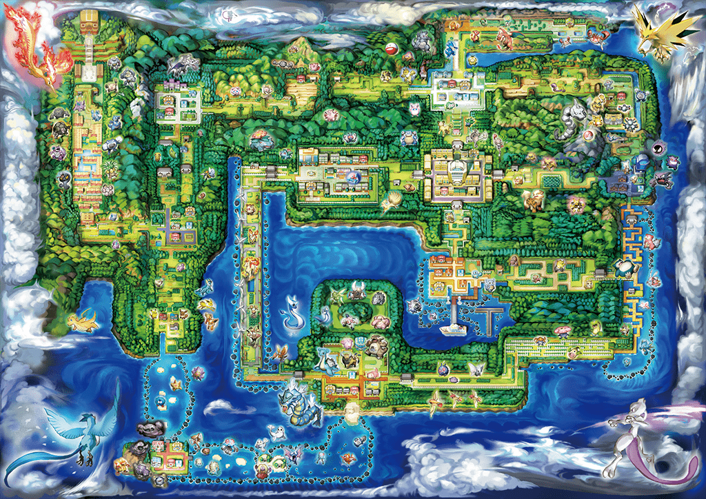

Carte de Kanto

Jadielle Ville
Arène de Giovanni. Le champion d'arène cache sa véritable identité de chef de la Team Rocket. Centre de commandement principal. Ethernatos serait détenu ici.
QG PrincipalCramois'Île
Ancien laboratoire du Projet Mewtwo. Partiellement détruit lors de l'évasion de Mewtwo. Des expériences continuent dans les sous-sols.
Base scientifiqueCéladopole
Casino clandestin. Façade légale pour le blanchiment d'argent. Accès secret vers une base souterraine. Miaouss Gigamax y a été aperçu récemment.
Activité intenseSafrania
Tour Silph sous surveillance. Giovanni a tenté de voler la Master Ball. Des agents infiltrés dans l'entreprise surveillent les nouvelles technologies.
Infiltration activeAzuria
Grotte Azurée. Dernier repaire connu de Mewtwo. La Team Rocket tente de le recapturer. Jessie et James ont été vus dans les environs avec Giratina.
Opération en coursCarminha
Point de recrutement. Des agents approchent les dresseurs débutants. Proposition de "partenariat" suspecté d'être du recrutement forcé.
RecrutementLavanville
Tour Pokémon. Branette (Pokémon de Jessie) a été créée ici selon nos sources. Des perturbations spectrales anormales détectées.
Activité spectraleArgenta
Port de contrebande. James utilise le ferry pour transporter Sepiatroce et des Pokémon volés vers d'autres régions.
Trafic maritimeRoute 24
ALERTE : Yveltal aperçu. Le Pokémon de la Destruction de James a été vu absorbant l'énergie vitale de la végétation. Zone à éviter absolument.
DANGER MORTELCarmin sur Mer
Base neutralisée. Ancienne planque démantelée par l'Interpol. Mais attention : des agents pourraient revenir.
Neutralisé